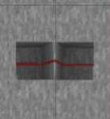

Index
Description
This tool allows you to easily program the data for memory bank systems in Survivalcraft. It supports three different use cases: ROM, Selector ROM, and FSM.
- ROM: Read only Memory
for any input value coming in, one programmed output value is coming out. This can be used to make calculators or displays. This is the simplest, and likely most common, of the three use cases. - Selector ROM:
An array of ROMs that all have the same input. Each ROM will respond differently to the input. For example, it may be set to activate only when its input is equal to its location number, thus creating a selector. This has many uses in displays, ROMs and RAMs. Any data generated with this online tool will need some of these selectors if your ROM design has too many inputs for a single Memory Bank to process - FSM: Finite State
Machine
A memory bank with its output connected to its input will behave like an FSM. An FSM has a fixed number of states and can choose to go to any other state depending on its current state and some external inputs. It can be used to store and step through its states. I found it most useful for handling game loops.
Code
Code Format
Within the code field you can write an anonymous arrow function in javascript. The function must take an array of numbers and an optional number as parameters, and it must return an array of numbers. This optional number is the location index when you want many sets of banks with the same inputs each (called Selector ROM on this page) but you wont need it often. The amount of numbers in the input and output arrays and the sizes in bits of each number within the arrays are determined by the "input types" and "output types" text fields. The amount of types within these type fields must match the amount of numbers within their corresponding arrays.Type Format
(number[], number) => number[]
Format Example
([parameter1, parameter2, parameter3, parameter4], locationIndex) => {
return [parameter1, parameter2, parameter3, parameter4]
}
Running Code
When you press the run button, the function will be evaluated for every input of your memory bank, the output of the function will be saved as memory bank data. It will be encoded in data types and split over digits.Relevant Javascript Documentation
- Javascript
- Basic Calculating
- Math Functions
- Conditional (ternary) operator (you will see this be used a lot in the examples)
Location Index Parameter
The location index parameter represents the index of the memory bank set within the code. This parameter is only needed when you want to generate an array of memory banks with alterations depending on its index (this parameter). On this page, this is referred to as a "Selector ROM".
Code Examples
-
ROM Calculations
-
Addition
locations: 1 input sizes: 4, 4 output sizes: 5
([x, y]) => { return [x + y]; } -
Subtraction
locations: 1 input sizes: 4, 4 output sizes: 4, 1
([x, y]) => { return [x - y]; } -
Subtraction Without Using Types (Sign-Magnitude-Integer Representation)
locations: 1 input sizes: 4, 4 output sizes: INT_5
([x, y]) => { const value = x - y; return [Math.abs(value), (value < 0) ? 1:0]; }
-
-
ROM Conversions
-
8-bit Hexadecimal To 3-digit Decimal
locations: 1 input sizes: 8 output sizes: 4, 4, 4
([x]) => { const digit1 = x % 10; const digit2 = Math.floor(x/10) % 10; const digit3 = Math.floor(x/100) % 10; return [digit1, digit2, digit3]; } -
3-digit Decimal Input To 8-bit Hexadecimal
locations: 1 input sizes: 4, 4, 4 output sizes: 8
([digit1, digit2, digit3]) => { return [digit1 + digit2 * 10 + digit3 * 100]; } -
Sign-magnitude Integer To Two's Complement Integer
locations: 1 input sizes: SM_INT_8 output sizes: INT_8
([x]) => { return [x]; } -
Bit Mask And Shift Left
locations: 1 input sizes: 4 output sizes: 8
([x]) => { const bitShiftLeftAmount = 1; const bitMask = 0b1111; return [(x & bitMask)<<bitShiftLeftAmount]; } -
Bit Mask And Shift Right
locations: 1 input sizes: 4 output sizes: 8
([x]) => { const bitShiftRightAmount = 1; const bitMask = 0b1111; return [((x & bitMask)<<4)>>bitShiftRightAmount]; }
-
-
FSM Smart Counters
-
8-bit Increment-only Counter
that resets on the maximum value (aka "FF", "1111 1111"). Trigger the memory bank clock inputs to increment. Send the maximum signal (aka "F", "1.5v", "1111") to both input wires to reset it.locations: 1 input sizes: 8 output sizes: 8
([x]) => { if(x == 0xff) return 0; return [x + 1]; } -
4-bit Counter With Overflow
Inputs: keep, reset, increment, decrementlocations: 1 input sizes: 4, 1, 1 output sizes: 4
([position, isMoving, isDecrementing]) => { const maxPosition = 15; const minPosition = 0; const overflowValue = minPosition; const underflowValue = maxPosition; if (isMoving == 0) { if (isDecrementing != 0) { position = 0; } } else { if(position >= maxPosition && isDecrementing == 0) { position = overflowValue } else if(position <= minPosition && isDecrementing != 0) { position = underflowValue } else { position += (isDecrementing != 0 ? -1 : 1); } } return [position]; }Configurations
-
4-bit Counter Without Overflow
locations: 1 input sizes: 4, 1, 1 output sizes: 4
const maxPosition = 15; const minPosition = 0; const overflowValue = position; const underflowValue = position; -
6-bit Counter FSM With Overflow
locations: 1 input sizes: 6, 1, 1 output sizes: 6
const maxPosition = 63; const minPosition = 0; const overflowValue = minPosition; const underflowValue = maxPosition; -
6-bit Counter FSM Without Overflow
locations: 1 input sizes: 6, 1, 1 output sizes: 6
const maxPosition = 63; const minPosition = 0; const overflowValue = position; const underflowValue = position;
-
-
6-bit Pong Ball Controller FSM
locations: 1 input sizes: 6, 1, 1 output sizes: 6, 1
([position, isDecrementing, isResetting]) => { const maxPosition = 63; const minPosition = 0; if (isResetting != 0) { position = 0; isDecrementing = 0; } else { if (position >= maxPosition && isDecrementing == 0) { isDecrementing = 1; } else if (position <= minPosition && isDecrementing != 0) { isDecrementing = 0; } else { position += (isDecrementing != 0 ? -1 : 1); } } return [position, isDecrementing]; } -
2-bit CPU
with instructions: halt, load, subtract, branch if not zero, and a program to decrement until zero is reached. Given the small instruction set (2-bit gives only four different instructions) you should adjust it per program. Inspired by The Little Man Computer (Online Demo)locations: 1 input sizes: 2, 2, 2, 2, 1 output sizes: 2, 2, 2, 2, 1
([programCounter, accumulator, addressRegister, instructionRegister, isCycleExecute]) => { const assemblyProgram = [ {instruction: 1, address: 0}, // load the first value from programData into the accumulator {instruction: 2, address: 1}, // subtract the second value of programData from the accumulator {instruction: 3, address: 0}, // jump (branch) to the first instruction if the accumulator is not zero {instruction: 0, address: 0}, // stop the program ]; const programData = [3, 1, 0, 0]; if (isCycleExecute == 0){ isCycleExecute = 1; instructionRegister = assemblyProgram[programCounter].instruction; addressRegister = assemblyProgram[programCounter].address; } else { isCycleExecute = 0; programCounter += 1; switch(instructionRegister){ case 0: // halt (aka HLT) programCounter -= 1; isCycleExecute = 0; break; case 1: // load (aka LDA) accumulator = programData[addressRegister]; break; case 2: // subtract (aka SUB) accumulator -= programData[addressRegister]; break; case 3: // branch if not zero if(accumulator != 0){ programCounter = addressRegister; } break; // store (STA) can be implemented with additional ROMs to manage the clock and writing data inputs of the memory banks depending on these parameters } } return [programCounter, accumulator, addressRegister, instructionRegister, isCycleExecute]; }
-
-
Selector ROM
-
4-bit Selector
locations: 16 input sizes: 4 output sizes: 4
([x], bankPosition) => { return [x == bankPosition ? 0xf : 0x0]; }Configurations
-
8-bit Selector
locations: 256 input sizes: 8 output sizes: 4
-
-
Horizontal Segment AND-grid Driver For 4-LED Plotters
locations: 16 input sizes: 4 output sizes: 4
([x], bankPosition) => { const values = [0x3, 0xc]; const isActive = Math.floor(x/values.length) == bankPosition; return [!isActive ? 0x0 : values[x % values.length]]; }Configurations
-
Vertical Segment AND-grid Driver For 4-LED Plotters
const values = [0x5, 0xa];
-
-
4-bit Multiplexer
locations: 16 input sizes: 4, 4 output sizes: 4
([x, y], bankPosition) => { return [y == bankPosition ? x : 0x0]; }
-
Amount Input
The amount input field is a single number that represents the amount of memory bank sets to generate. Usually this should be left as "1" unless you want to generate an array of memory banks with alterations depending on its index. On this page, this is referred to as a "Selector ROM". Note that the number of banks required scales linearly, more information here.
Input Sizes Input
The input sizes input field lets you set the format of the input of your system as a set of segments separated by commas. Each segment can be either be defined by a number, which is its size in bits, or a data type. Note that the number of banks required scales exponentially, more information here.
Output Sizes Input
The output sizes input field lets you set the format of the output of your system as a set of segments separated by commas. Each segment can be either be defined by a number, which is its size in bits, or a data type. Note that the number of banks required scales linearly, more information here.
Data Types
Each value may be split up into multiple smaller parameters of specific sizes in bits. Allowing them to be treated separately. You can use the "input types" and "output types" fields to set the amount of parameters and their types and sizes. This can be done by typing a numbers (sizes in bits) separated by commas, each number is a parameter. Instead of a number you may type a datatype, the code supports the following datatypes:
- Unsigned Integer Types An unsigned integer is a whole number that can not be negative.
- (Signed) Integer Types A signed integer (aka integer) is a whole number that can be negative.
- Floating Point Number Types Currently unsupported
Format
On this online tool it is formatted as "U_INT_[n]" (without the quotes) (where "[n]" is any number representing the size in bits)Unsigned Integer Examples
| Type | Bits | Range |
|---|---|---|
| U_INT_1 | 1-bit | 0 to 1 |
| U_INT_2 | 2-bit | 0 to 3 |
| U_INT_3 | 3-bit | 0 to 7 |
| U_INT_4 | 4-bit | 0 to 15 |
| U_INT_5 | 5-bit | 0 to 31 |
| U_INT_6 | 6-bit | 0 to 63 |
| U_INT_7 | 7-bit | 0 to 127 |
| U_INT_8 | 8-bit | 0 to 255 |
| U_INT_16 | 16-bit | 0 to 65,535 |
| U_INT_32 | 32-bit | 0 to 4,294,967,295 |
| U_INT_64 | 64-bit | 0 to 18,446,744,073,709,551,615 |
Other Unsigned Integer Forms
| Type | Equivalent To | Bits | Range |
|---|---|---|---|
| [n] | U_INT_[n] | n bits | 0 to (2ⁿ - 1) |
| BYTE | U_INT_8 | 8-bit | 0 to 255 |
| NIBBLE | U_INT_4 | 4-bit | 0 to 15 |
| BIT | U_INT_1 | 1-bit | 0 to 1 |
| FLAG | U_INT_1 | 1-bit | 0 to 1 |
| BOOLEAN | U_INT_1 | 1-bit | 0 to 1 |
| BOOL | U_INT_1 | 1-bit | 0 to 1 |
Two's Complement
This tool uses two's complement to represent negative numbers in binary, here the most significant bit has been negated. For example a four bit number's bits in 2s complement would be valued: 1, 2, 4, -8 instead of 1, 2, 4, 8.Format
on this online tool it is formatted as "INT_[n]" (without the quotes) (where "[n]" is any number representing the size in bits)2s Complement Signed Integer Examples
| Type | Bits | Range |
|---|---|---|
| INT_1 | 1-bit | -1 to 0 |
| INT_2 | 2-bit | -2 to 1 |
| INT_3 | 3-bit | -4 to 3 |
| INT_4 | 4-bit | -8 to 7 |
| INT_5 | 5-bit | -16 to 15 |
| INT_6 | 6-bit | -32 to 31 |
| INT_7 | 7-bit | -64 to 63 |
| INT_8 | 8-bit | -128 to 127 |
| INT_16 | 16-bit | -32,768 to 32,767 |
| INT_32 | 32-bit | -2,147,483,648 to 2,147,483,647 |
| INT_64 | 64-bit | -9,223,372,036,854,775,808 to 9,223,372,036,854,775,807 |
Sign-Magnitude Signed Integers
The tool also supports the Sign-magnitude representation of negative numbers, this is simpler but not reccommended as it has some flaws. Here the sign bit inverts the number by multiplying it by "-1" when it is high. The main reason this tool suports it is so you can convert numbers formatted in sign-magnitude to 2s complement making it easier to input negative numbers. Note: the sign-magnitude representation can represent both "0" and "-0" the latter of which is not a number, the 2s complement on the other hand does not have negative zero and can display an extra negative number.Sign-Magnitude Signed Integer Examples
| Type | Bits | Range |
|---|---|---|
| SM_INT_1 | 1-bit | -0, +0 (Only represents zero) |
| SM_INT_2 | 2-bit | -1 to +1 |
| SM_INT_3 | 3-bit | -3 to +3 |
| SM_INT_4 | 4-bit | -7 to +7 |
| SM_INT_5 | 5-bit | -15 to +15 |
| SM_INT_6 | 6-bit | -31 to +31 |
| SM_INT_7 | 7-bit | -63 to +63 |
| SM_INT_8 | 8-bit | -127 to +127 |
| SM_INT_16 | 16-bit | -32,767 to +32,767 |
| SM_INT_32 | 32-bit | -2,147,483,647 to +2,147,483,647 |
| SM_INT_64 | 64-bit | -9,223,372,036,854,775,807 to +9,223,372,036,854,775,807 |
Optional Parameters
Offset
Currently unsupportedBank Names
Each memory bank has a code-name like "Bank L0-I0-D0" for the first bank. These names are shown above each bank's generated data and above each bank in the generated circuit. In these names the L, I, and D stand for Location, Input, and Digit respectively. Here is an overview:
| Letter | Parameter | Function | If the value was 0 | If the value was 1 | If the value was 2 |
|---|---|---|---|---|---|
| L | location | Which set of banks this bank is part of | first set | second set | third set |
| I | input | Which set of 256 input values this bank will handle. | input values 0 to 255 | input values 256 to 511 | input values 512 to 767 |
| D | digit | Which set of four bits in the output this bank will generate. | output bits 0 to 3 | output bits 4 to 7 | output bits 8 to 11 |
Data
Whenever memory bank data is generated you may need more than one memory bank to contain it, these are structured by three metrics:
- digit: Whenever you need numbers larger than 15 (aka "F") to be output from your memory bank, you will need more digits.
- input: Whenever you need numbers larger than 255 (aka "FF") to be input into your memory bank, you will need more banks to handle the higher ranges
- location: Whenever you are making a selector ROM system you will need a ROM for each physical location Using this makes your ROM a selector ROM (a therm I made up but will be using throughout this site)
As you can see the input size scales exponentially: for one 4-bit-output-and-16-bit-input system you need 256 banks:
Generated Circuit
A circuit is generated alongside the data. Wire labels refer to the overview table shown after generating, memory bank labels refer to the generated data apart from the labels "4-bit Multiplexer" and "8-bit Selector", these refer to presets with the same name. The image is made up of multiple screenshots from SurvivalCraft stitched together and may cause some slight graphical artifacts as seen below. The circuit part shown in that image may be treated as a single trench with a wire in it.
Bank Preset labels
If labels such as "4-bit Multiplexer L0" and "8-bit Selector L0" are shown in your generated circuit then your circuit needs more than two input wires, the additional wires are then combined using specially programmed memory banks. The data for these memory banks can be found in the presets section, the presets have the same names as the labels: "4-bit Multiplexer" and "8-bit Selector". The "L" suffix ("L0", "L1", "L2", etc.) of the label refers to the variant of the generated preset to use, this is its location index. Here is how to get their data.
- Open the presets page on a new tab
- Click "4-bit Multiplexer" or if your label said "8-bit Selector" click that instead
- Scroll down and click generate
- Scroll down to the "Generated Data" section
-
Copy the data you need, look at the table below to find which bank to use for the given label suffix. Continue the pattern for lables with "L4" or higher.
Label Bank L0 Bank L0-I0-D0 L1 Bank L1-I0-D0 L2 Bank L2-I0-D0 L3 Bank L3-I0-D0
Common Errors
Unfortunately, there are few error messages available to be shown to you. If the code you wrote in the code input field does not work, you could open your browsers web debugger to view if the site throws any errors in the console. Instead you could also replace the code with one of the example programs to figure out which parts of your code work and which do not.
File Importing
If you wanted to use files you could create a javascript array like shown below.
const myFile = [];Similar software
Professionals use Verilog to program the internal wiring of chips. This is remotely similar to this tool:
- In both tools, variables have a size defined as a number of bits.
- The ROM circuit application of this tool is similar to using the blocking assignment in Verilog.
- The FSM circuit application of this tool is similar to using the non-blocking assignment in Verilog. This similarity I found when building FSMs in Verilog.
Contribute
If you have an idea for a feature or bug fix for this site, you can fork it, develop it and make a pull request. If I see it, it works, and I like it, I will add it to this project.